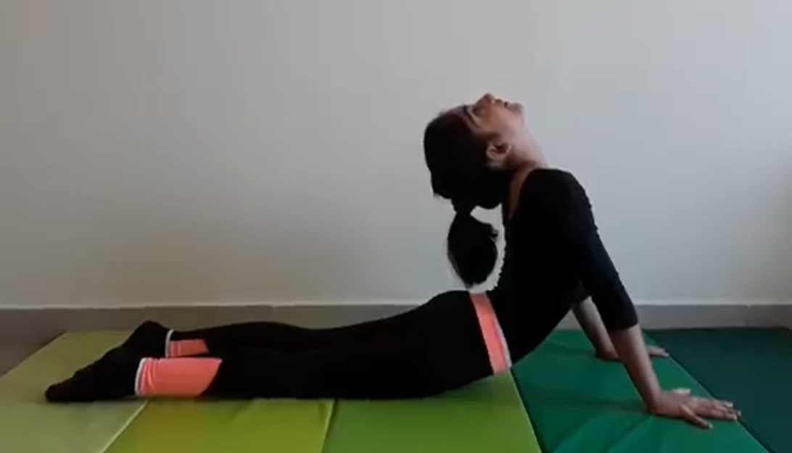

COBRA POSE

Steps to perform Cobra Pose
- Lie prone on the floor. Stretch your legs back, tops of the feet on the floor. Spread your hands on the floor under your shoulders. Hug the elbows back into your body.
- Press the tops of the feet and thighs and the pubis firmly into the floor.
- On an inhalation, begin to straighten the arms to lift the chest off the floor, going only to the height at which you can maintain a connection through your pubis to your legs. Press the tailbone toward the pubis and lift the pubis toward the navel. Narrow the hip points. Firm but don’t harden the buttocks.
- Firm the shoulder blades against the back, puffing the side ribs forward. Lift through the top of the sternum but avoid pushing the front ribs forward, which only hardens the lower back. Distribute the backbend evenly throughout the entire spine.
- Hold the pose anywhere from 15 to 30 seconds, breathing easily. Release back to the floor with an exhalation.